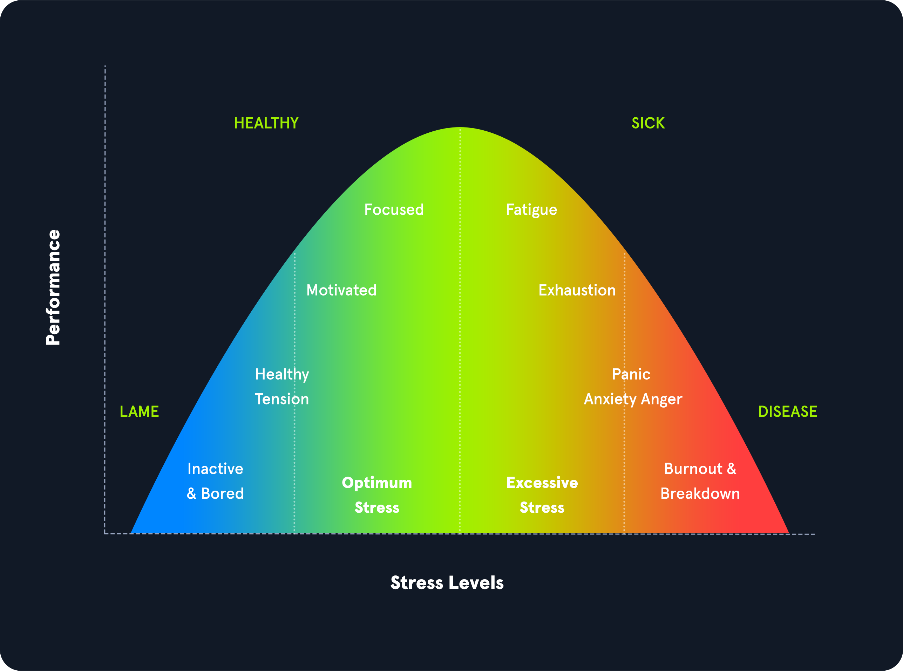
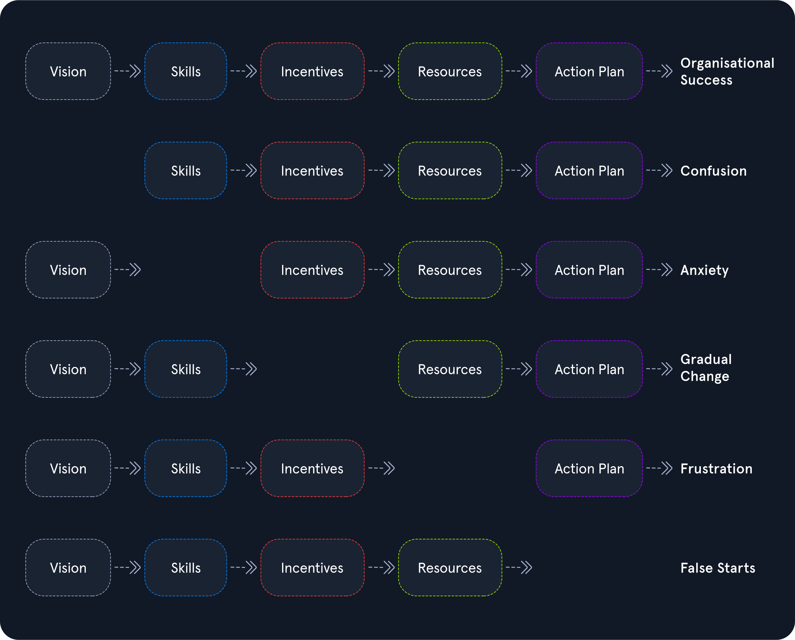
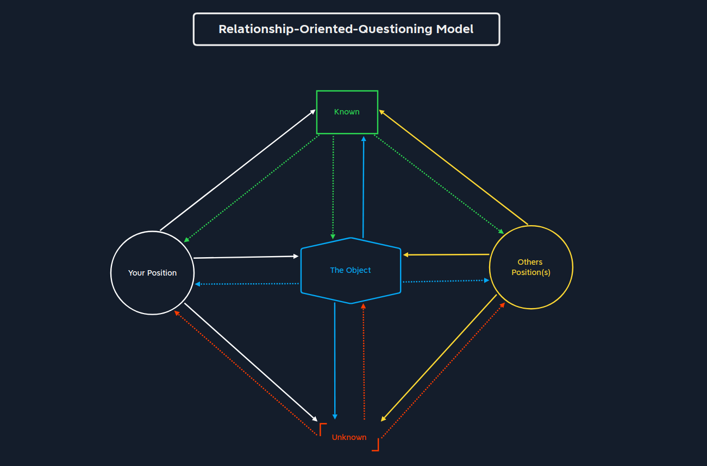

Progress is noticeable when the question that tortured us has lost its meaning.
Learning Efficiency
Learning efficiently in information security is difficult because there is so much to learn, so many topics and it’s all very technical.
This isn’t a bad thing, it means there is a lot available to cut your teeth on. What is difficult is combining what we already know, what we are learning about, and how to adapt all of that into a new set of skills and knowledge.
Even when presented with adequate information, if we do not know how to use it, it becomes noise.
We also need to fail. Failure is an unavoidable, and essential part to learning. It can also be one of the most painful parts of learning.
Being “good” at Something
To feel confident in being “good” at something, we need:
- To know what we are doing
- Have experience with the topic
- Have vast or comprehensive of not just the theoretical, but also the practical
So how does one get “good” at something?
Josh Kaufman proposed that we can learn something new in 20 hours. Even if we work on it for just 45 minutes a day.
A popular learning model often used is the Learning Pyramid which outlines how various learning techniques relate to each other and can help with retention.
The original study that informed the pyramid of learning has been lost and is considered untrustworthy.1
To summarise the learning pyramid, one will retain:
- 5% of information by listening to a lecture
- 10% of information by reading2
- 20% of information by watching an audiovisual
- 30% of information by watching a demonstration
- 50% of information by engaging in a group discussion
- 75% of information by practicing what was learnt
- 90% of information by teaching someone else, or applying it immediately
2 Because the original research was lost, I wonder what the reading level of participants was? If they never achieved a reading level above elementary reading it would make sense they didn’t retain much information.
Learning Types
If we ignore the learning pyramid is probably meaningless. We can divide it into two learning styles:
- Passive learning: listening, reading (arguable), watching.
- Active learning: discussion, practice, teaching
Active learning sees a better retention rate. But going into a discussion, or practice without understanding some of the theory can make the learning process more difficult.
We should use a mix of these learning types. Ideally techniques that we enjoy. For example:
- Read some information about the vulnerability
- Watch an Youtube video explaining the vulnerability
- Discuss questions or comments with a group
- Practice using the vulnerability
- Reflect and discuss your experience with the practical with a group
- Teach someone else what you learnt
Taking an approach that includes passive and active learning styles, you’re more likely to retain the information. Ongoing discussion gives you people to share issues and collaborate with. Which can spark creativity and out of the box thinking.
Documentation
No matter who documentation is for, here are some guidelines:
- It is beneficial to put ourselves in the position of our readers. This will make it much easier for us to design the documentation.
- Avoid repetition and ambiguity.
- Make documentation as easy to read as possible. No one wants to read the documentation that is difficult to understand or follow.
Comfort
The Yerkes-Dodson law is an observed relationship between pressure and performance. The law states that performance increases with physiological or mental arousal, but only up to a point.3

Obstacles
On obstacles:
Only the person who has taken the exact same journey as you can evaluate you and your decisions. Everything else is only assumptions.

Questioning
The most important and most difficult thing in any situation is not the search for the right answer but the search for the right question.
There are no good or bad questions. Questions have no morality.
But people use the states “good” and “bad” to describe the profit or loss they expect from the question.
- A “good” question might result in an answer that benefits the asker.
- A “bad” question might result in loss, or not help the asker.
The state we give to a question does not change the answers. The state attributed to the question belongs to the answer or the result.
There are rough questions or precise questions though.
- A rough question might be: “How can I hack X?” — it’s vague and difficult to answer.
- A precise question might be: “How can I use the server’s SMB service to identify its existing user accounts?” — there is a clear outcome that the answerer can work to answer.
The goal of a question is one of the most important aspects that determine our approach and the question we ask. Often we are looking:
- To understand the reason for an event (
past) - To experience something completely new and to understand the way something works (
present) - To predict the effect of an event (
future)
Relationship-Oriented-Questioning Model

This model represents five components:
| Component | Description |
|---|---|
Your Position |
This describes the position we are in and our view. |
The Object |
The object is the core element of the question. The main component of our sentence takes the meaning out of the question. |
Known |
This information is known to us. |
Unknown |
This information is not known to us. |
Other Position(s) |
This component describes the position of other persons. |
So even for questions that do not directly concern us or about situations we are not involved in, we still have a position and view on the object.
Summary
A right question is a precise question that allows us to establish the relationships between the components, to understand them, and to take us one step further to the required answer.
Learning Progress
In order to see progress, two specific states are compared, including a specific time window between the learning process.
If we cannot give ourselves the confirmation, we look for it from others. However, no one else can give us confirmation without taking the path together with us.